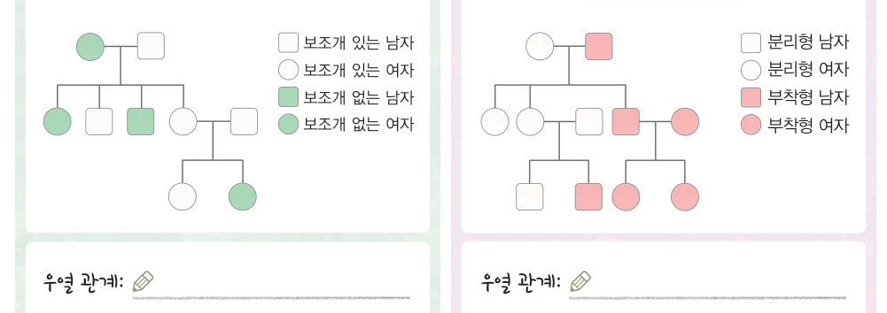
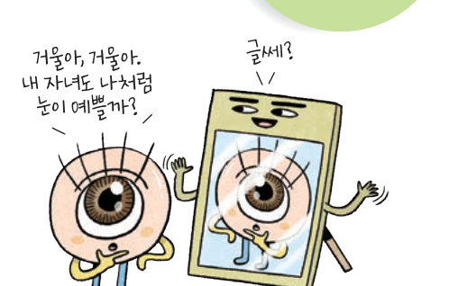

자녀의 생김새가 부모와 다른 부분이 있는 까닭은 무엇일까? 보조개와 귓불 가계도로 우열을 가리고, 가상 동전 가족으로 자녀를 여러 명 만들어 보며 부모의 형질이 전달되는 과정을 확인한 뒤 대단원 최종 점검으로 마무리하자.
| 평가 기준 | 스스로 평가 |
|---|---|
| 탐구 기능 가계도를 옳게 분석 및 해석하였는가? | |
| 탐구 기능 유전 형질의 표현형이 결정되는 과정을 이해하였는가? | |
| 인성 탐구 과정에 적극적으로 참여하였는가? |
사람마다 지문이 다르듯 DNA의 구성도 사람마다 조금씩 차이가 있다. 특히 DNA의 특정 부위는 사람마다 반복되는 형태가 달라서 개개인을 구별하는 데 이용되는데, 이를 DNA 지문이라고 한다. DNA 지문은 범죄 수사, 사고 현장의 신원 확인, 생물종 사이의 관계 연구, 식품의 원산지 확인 등에 이용된다. 유전학은 개인 맞춤형 의약품, 유전자 치료 등 의학 분야에서도 널리 활용된다.
| 평가 기준 | 스스로 평가 |
|---|---|
| 세포 분열, 생식, 발생 과정을 염색체와 관련지어 설명할 수 있다. | |
| 멘델의 유전 원리로 사람의 유전 현상을 설명할 수 있다. |